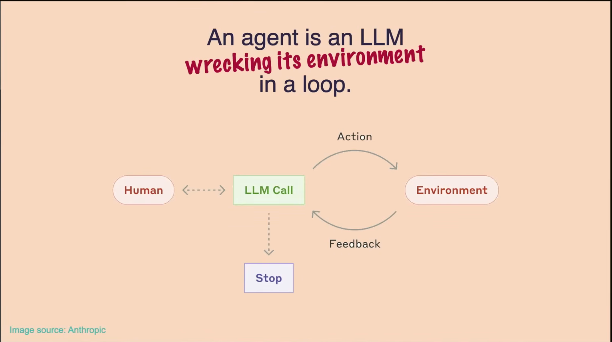
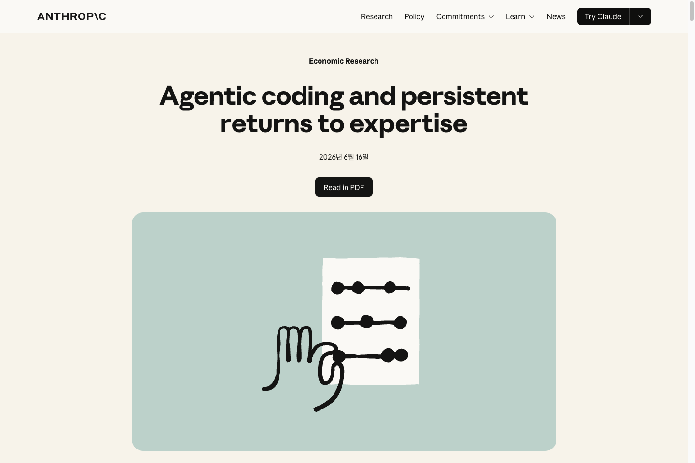

챗봇은 다섯 칸 곡선의 두 번째 칸이었습니다. 다음 칸으로 가는 데 필요한 명령어는 두 개입니다.
같은 요청, 3년의 차이 — 한쪽은 "알려주시면 정리해 드릴게요", 다른 쪽은 폴더를 열어 직접 처리합니다.
왼쪽: 2023년 생성형 챗봇 대화(재현) · 오른쪽: 터미널에서 grok을 부른 세션(재현).
곡선 위 현재 위치, 용어 15개, 그리고 오늘 시작하는 법.
사람이 직접 → 챗봇 → 코딩 에이전트 → 자율 에이전트 → AI가 AI를 개선. 오늘 세상은 네 번째 칸에 있습니다.
based on Anthropic, "When AI builds itself — recursive self-improvement" (anthropic.com/institute/recursive-self-improvement)
엄청난 양의 글을 읽고, 앞 문장 다음에 올 가장 그럴듯한 단어를 한 칸씩 채우는 기계 — 그게 시작이었습니다.
학습이 멈춘 날짜 이후는 모르고, 모르는 것도 확률로 채우니 — 자신 있게 틀립니다.
2023년 화제가 된 실제 사례 — 화면 재현. 존재하지 않는 사실을 자신 있게 지어냅니다.
그럴듯하지만 믿을 수 없으니, 사람이 매번 확인하고 복사해 옮기는 사용법으로 굳었습니다.
이제 AI는 답을 하는 대신 "웹을 검색해줘, 이 파일을 열어줘"라고 요청하고, 그 결과를 받아 일을 이어갑니다.
파일을 읽고 쓰고 실행하는 그 오래된 창을 AI가 다룰 줄 알게 되자, 폴더 속 파일을 직접 만지기 시작했습니다.
Thariq Shihipar, "Claude Agent SDK Workshop", AIE Code Summit 2025 — "가장 강력한 도구는 bash".
계획하고, 실행하고, 결과를 확인하고, 틀리면 스스로 고칩니다 — 이 반복이 진짜 차이입니다.

Solomon Hykes, "Containing Agent Chaos", AIE World's Fair 2025.
"에이전트는 도구를 루프 안에서 쓰는 모델" — 이 한 줄이 챗봇과 에이전트를 가릅니다.
Barry Zhang, "How We Build Effective Agents", AIE Summit 2025 · Ash Prabaker & Andrew Wilson, "Build Agents That Run for Hours", AIE 2026 (하네스 진화).
차이는 모델이 아니라, 자리입니다.개념 예시 클립 · 실제 grok 화면과 다를 수 있음
스스로 실행하고, 큰 일이면 팀을 꾸려 몇 시간짜리 작업을 나눠 맡깁니다. 이게 지금 세상이 서 있는 칸입니다.
자리를 비워도, 팀이 돌아갑니다.개념 예시 클립 · 실제 grok 화면과 다를 수 있음
막았던 회사도 공식 도입했고, AI 만드는 회사들조차 이제 AI에게 일을 시켜 만듭니다.

삼성전자 생성형 AI 제한(2023) → 공식 도입(2026) 보도 · Anthropic 2026 · based on Andrej Karpathy, "Software Is Changing (Again)", 2025.
에이전트는 딱 두 덩어리 — 뇌(모델)와 몸(하네스). 오늘 용어 15개는 전부 이 그림 한 장에 붙는 이름입니다.
구조 = 모델(뇌) + 하네스(몸) · 에이전트 런타임의 공통 골격.
화면 예시 — grok /model 선택(재현).
화면 예시 — grok reasoning_effort low·medium·high(재현).
화면 예시 — grok 컨텍스트 256K(재현).
실행 전에 계획서를 먼저 받는 모드 (비유 · 결재). 잘 쓰려 애쓰지 않아도, 고르기만 하면 됩니다.
프롬프트가 아니라, 대화면 됩니다.개념 예시 클립 · 실제 grok 화면과 다를 수 있음
Dex Horthy, "No Vibes Allowed", AIE Code Summit 2025 (Research→Plan→Implement).
Thariq Shihipar, "Claude Agent SDK Workshop", AIE Code Summit 2025 — "AGENTS.md = 에이전트의 기억".
Barry Zhang & Mahesh Murag, "Don't Build Agents, Build Skills Instead", AIE Code Summit 2025 — "재사용 가능한 전문성".
Mahesh Murag, "Building Agents with MCP — Workshop", AIE Summit 2025 (개념). N×M → 표준 하나로 N+M · 도식 자체 재작도.
지시서(AGENTS.md)가 '규칙'이라면, 위키는 쌓인 '지식·이력' — 서로 다른 층입니다.
Ash Prabaker & Andrew Wilson, "Build Agents That Run for Hours", AIE 2026 (Agent Teams).
용어 15개가 이 그림 안에 모두 자리를 잡았습니다. 이제 남은 건 ‘작업장’, 폴더 하나뿐입니다.
웹 챗봇도 같은 모델, 같은 일을 상당 부분 합니다. 강요가 아니라, 왜 폴더가 더 나은지를 정직하게 놓습니다.
챗봇에 나르기 vs 터미널로 부르기.
검은 화면은 무서운 게 아니라, 그냥 폴더 주소창입니다. 경로는 폴더를 끌어다 놓으면 저절로 붙습니다.
자료·결과물·통과 기준·금지선 — 외울 템플릿이 아니라, 플랜 모드가 되묻는 바로 그 항목입니다.
초안과 정리와 비교는 맡기되, 책임과 승인은 넘기지 않습니다.
직군은 달라도 시작은 같습니다. 폴더 하나 정하고, 첫 요청 하나를 던지는 것.
| 직군 | 첫 폴더 | 첫 요청 예시 | 확인 포인트 |
|---|---|---|---|
| 대표 | 의사결정 자료 폴더 | "이 자료들에서 선택지와 리스크를 비교표로" | 최종 판단은 본인이 |
| 경영지원 | 규정·공지 폴더 | "개인정보는 가린 채 공지 초안 작성" | 개인정보 원본 금지 |
| 기획 | 리서치 폴더 | "경쟁사 자료 비교표, 출처 링크 필수" | 출처 확인 |
| 개발 | 이슈 폴더 | "이 로그로 재현 절차와 수정 초안" | 통과 여부 직접 확인 |
| 인프라 | 서버 문서 폴더 | "설정 파일 점검하고 위험 항목 목록화" | 실제 변경 전 승인 |
완벽하게 하려 하지 않아도 됩니다. 한 바퀴만 돌려 보면 감이 옵니다. 막히면 시작 가이드와 사내 채널이 있습니다.
시작 가이드 A4 오늘 배포 · 사내 채널 · 오피스아워.
오늘 세상은 네 번째 칸에 있고, 다섯 번째 칸 — AI가 스스로를 개선하는 자리 — 가 벌써 열리고 있습니다.
개념 — AI가 AI를 만들고 학습시키는 재귀 루프 (자체 도식). 논의: Anthropic 외.
두 번째 칸에서 오늘 한 걸음, 세 번째 칸으로. 오늘 저녁 폴더 하나 열고, 첫 요청 한 번이면 됩니다.
"가장 효과적으로 소통하는 사람이, 가장 가치 있는 사람이 됩니다."
Sean Grove, "The New Code", AIE World's Fair 2025.
그 외 · 컷오프(학습이 멈춘 날짜 / 절판된 백과사전) · 할루시네이션(모르는 것을 그럴듯하게 채움 / 아는 척) · bash(AI가 컴퓨터를 다루는 공용 언어 / 만능 손잡이)
전체 구조도는 본문 15·26쪽 '지도' 참고.
Windows · PowerShell 기준. SuperGrok 구독 계정만 있으면 API 키 없이 바로 시작합니다.
macOS·Linux: curl -fsSL https://x.ai/cli/install.sh | bash · PowerShell 설치가 막히면 WSL2. 회사 계정·보안 승인은 후속 과제.
강연 인용과 화면 캡처의 원본 목록입니다. 사내 교육용 인용 범위 안에서 사용했습니다.